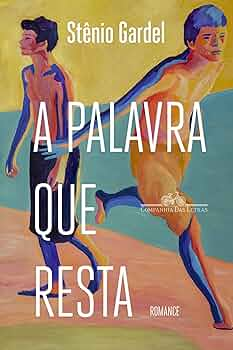

A palavra que resta
Stênio Gardel
Companhia das letras, 160 p.
Status:Read
★★★★★
Literatura Contemporânea Brasileira
Your feelings and tougths about A palavra que resta:
Esse livro acabou comigo. Bonito e cortante na mesma medida!
Your favorite quotes:
"mesmo depois de velho parece que a gente não deixa de querer, o bom da vida é teimar" p.18
"correu como se fosse sua a força que rodava o mundo" p.55
"A voz que afaga, a voz que afoga" p.77